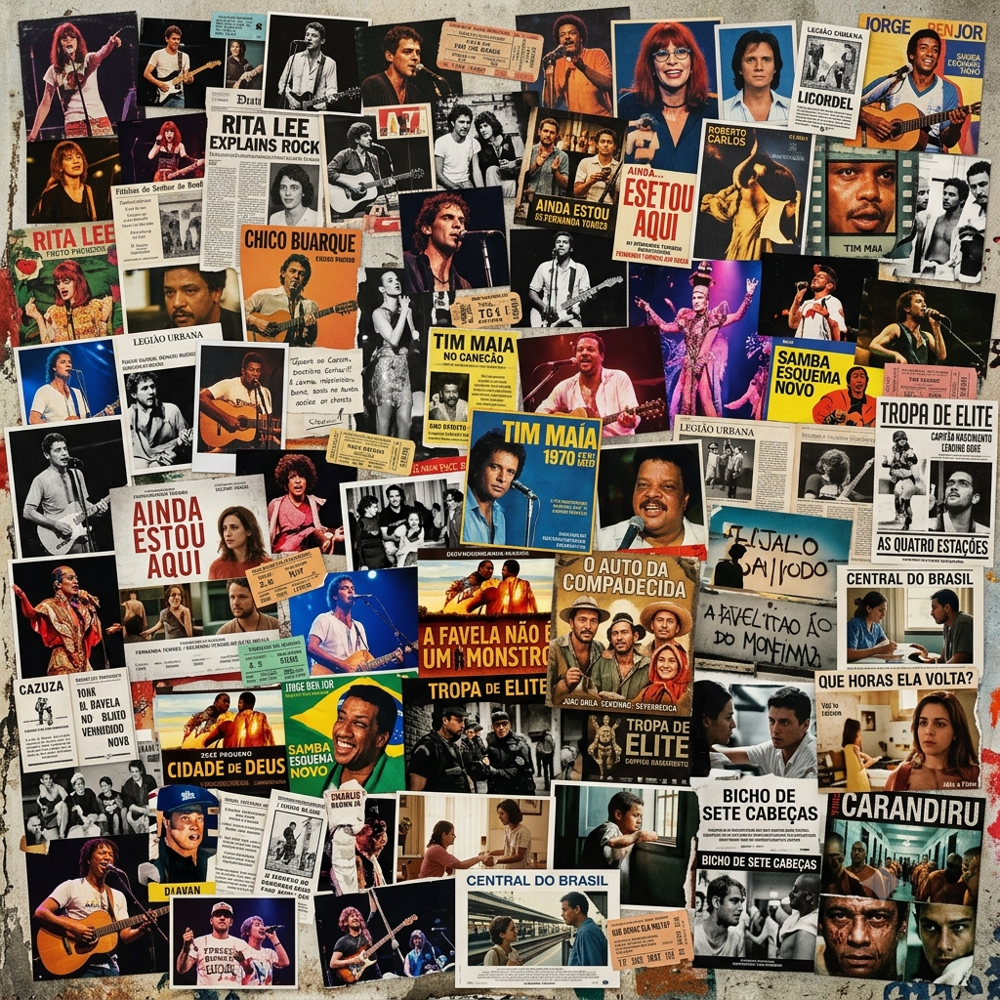
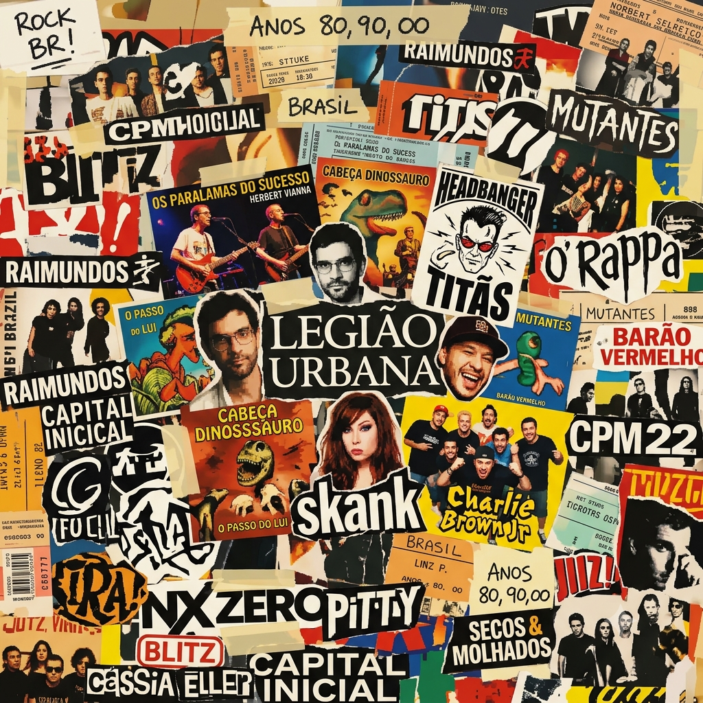
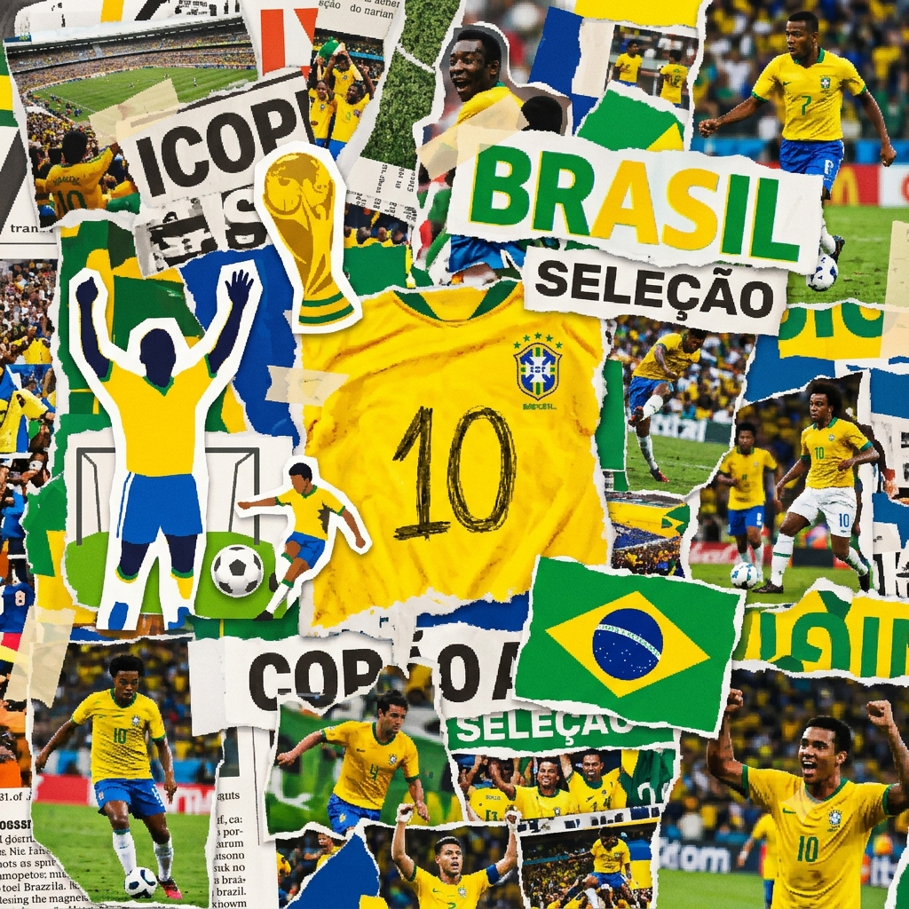
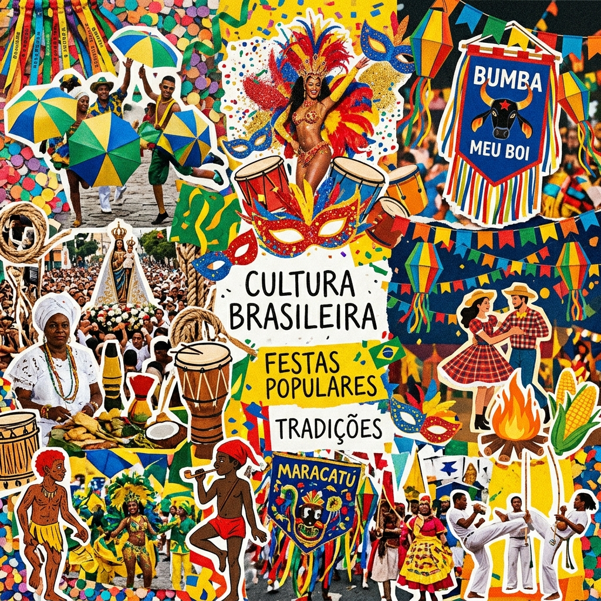

A Diversidade da Cultura Brasileira em Suas Múltiplas Expressões

Recomendações de Filmes
Por: Gabrielly S. Arantes
1º - Ainda Estou Aqui (2024): Drama biográfico dirigido por Walter Salles que retrata a luta de uma família durante a ditadura militar.
2º - Cidade de Deus (2002): Dirigido por Fernando Meirelles e Kátia Lund, indicado a quatro prêmios no Oscar.
3º - Tropa de Elite (2007): Dirigido por José Padilha, vencedor do Urso de Ouro no Festival de Berlim.
4º - O Auto da Compadecida (2000): Comédia baseada na peça de Ariano Suassuna, muito amada pelo público.
5º - Central do Brasil (1998): Drama emocionante de Walter Salles com indicação ao Oscar para Fernanda Montenegro.
6º - Que Horas Ela Volta? (2015): Val deixa a filha, Jéssica, no interior de Pernambuco e passa os 13 anos seguintes trabalhando como babá do menino Fabinho em São Paulo. Um filme brasileiro, do gênero drama, escrito e dirigido por Anna Muylaert.
7º - Bicho de Sete Cabeças (2001): Filme sobre jovem problemático que se envolve com drogas e más companhias, mas acaba internado no manicômio pelos pais, como solução para seu caso.
8º - Bingo: O Rei das Manhãs (2017): Um filme de comédia dramática brasileiro, produzido por Gullane Filmes e distribuído por Warner Bros.
A Multiplicidade da Cultura Nacional Brasileira: Etnia, Música, Cinema e Esporte na Literatura Acadêmica
Etnia, Música, Cinema e Esporte na Literatura Acadêmica
Por: Gabrielly S. Arantes
1. Matrizes Étnicas e Formação Identitária -
A literatura sociológica e antropológica brasileira estabelece a formação étnica como a base estruturante da cultura nacional. Pesquisas clássicas e contemporâneas (como as de Darcy Ribeiro e Gilberto Freyre) apontam que a identidade do país deriva do choque e da fusão entre as matrizes indígena, africana e europeia. Os dados acadêmicos mostram que a mestiçagem não gerou uma homogeneidade passiva, mas sim um campo de tensão, resistência e reinvenção constante, no qual o sincretismo religioso e a pluralidade linguística tornaram-se marcas centrais da sociedade.
2. Manifestações Culturais e Práticas Corporais -
As produções artísticas e as práticas esportivas funcionam na pesquisa acadêmica como espelhos das dinâmicas étnico-sociais brasileiras:
Música: Estudos de sociomusicologia (como os de Luiz Tatit e José Ramos Tinhorão) posicionam o samba, a bossa nova e as manifestações percussivas como espaços fundamentais de preservação da memória afro-brasileira e de mediação urbana. A música é mapeada como o principal vetor de exportação e afirmação da identidade nacional.
Cinema: A historiografia do cinema nacional (liderada por teóricos como Ismail Xavier) estuda desde o Cinema Novo até as produções contemporâneas. A análise cinematográfica foca em como as telas traduzem as assimetrias sociais, a estética da periferia e a busca por uma linguagem audiovisual autêntica e descolonizada.
Esporte: Investigações na antropologia do esporte (com destaque para Roberto DaMatta) interpretam o futebol e a capoeira como rituais de drama social. O estilo de jogo brasileiro é teorizado como uma extensão da plasticidade cultural, onde a ginga e a improvisação refletem estratégias históricas de sobrevivência e afirmação corporal.
Dados Bibliográficos: FREYRE, Gilberto. Casa-Grande & Senzala: Formação da família brasileira sob o regime da economia patriarcal. Rio de Janeiro: Maia & Schmidt, 1933; RIBEIRO, Darcy. O Povo Brasileiro: A formação e o sentido do Brasil. São Paulo: Companhia das Letras, 1995; TATIT, Luiz. O Cancionista: Composição de Canções no Brasil. São Paulo: EdUSP, 1996; TINHORÃO, José Ramos. História Social da Música Popular Brasileira. São Paulo: Editora 34, 1998; XAVIER, Ismail. O Cinema Brasileiro Moderno. São Paulo: Paz e Terra, 2001; DAMATTA, Roberto (Org.).
Música Popular Brasileira (MPB)
Top 5 Artistas Nacionais
Por: Gabrielly S. Arantes
1º - Tom Jobim: Um dos criadores da Bossa Nova e compositor de clássicos globais como "Garota de Ipanema".
2º - Elis Regina: Considerada uma das maiores e mais expressivas vozes da história da Música Popular Brasileira (MPB).
3º - Caetano Veloso: Co-fundador do movimento Tropicalista e um dos compositores mais influentes da cultura nacional.
4º - Gilberto Gil: Ícone da Tropicália, vencedor de múltiplos prêmios Grammy e mestre do ritmo e da poesia brasileira.
5º - Jorge Ben Jor: Pioneiro na fusão de samba, funk e rock, autor de sucessos globais como "Mas, Que Nada!".

Rock Nacional
Principais Bandas de Sucesso
Por: Gabrielly S. Arantes
1º - Charlie Brown Jr: : Misturou rock, hardcore e skate/hip hop com a marcante voz de Chorão, sendo um dos maiores sucessos dos anos 2000.
2º - Legião Urbana: : Ícone do rock de Brasília, liderado por Renato Russo, com letras poéticas e políticas que definiram a juventude dos anos 1980.
3º - Os Paralamas do Sucesso: : Misturaram rock, reggae e ska com grande sucesso comercial e popularidade duradoura.
4º - Titãs: : Conhecidos pela versatilidade, letras ácidas e forte presença de palco em várias formações e estilos.
5º - Sepultura: : A maior banda de metal do Brasil, com carreira internacional sólida e respeito mundial no heavy metal.
6º - Os Mutantes:: : Pioneiros do rock psicodélico brasileiro nos anos 1960, influenciando artistas no mundo todo com Rita Lee e Arnaldo Baptista.
7º - Skank: : Surgidos em Belo Horizonte, uniram o pop rock ao reggae, dancehall e influências mineiras com dezenas de hits.
8º - Engenheiros do Hawaii: : Banda gaúcha famosa pelas letras inteligentes, trocadilhos e o comando de Humberto Gessinger.
9º - Novos Baianos: : Misturaram choro, samba, frevo e rock n' roll com o antológico álbum Acabou Chorare.
10º - Jota Quest: : Referência do pop rock e soul brasileiro, com uma trajetória de grandes sucessos radiofônicos desde os anos 1990.

Futebol Brasileiro
Unico País a Conquistar 5 Títulos na Copa do Mundo
Por: Gabrielly S. Arantes
5º - 2002: Japão e Coreia do Sul
4º - 1994: Estados Unidos
3º - 1970: México
2º - 1962: Chile
1º - 1958: Suécia

Festas Culturais Populares
Tradições
Por: Gabrielly S. Arantes
Carnaval - A maior festa popular do Brasil, conhecida pelos desfiles de escolas de samba, blocos de rua e frevo, com grande destaque no Rio de Janeiro, em Salvador e em Recife.
Festa Junina - Celebradas em junho com fogueiras, danças de quadrilha, bandeirolas e comidas de milho, com festas gigantescas em Caruaru e Campina Grande.
Bumba Meu Boi - Tradicional no Maranhão e no Norte, encena a morte e a ressurreição de um boi em cortejos coloridos.
Festival de Parintins - Ocorre em junho no Amazonas, com uma disputa famosa entre os bois Caprichoso e Garantido.